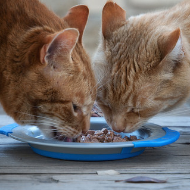

热门文章
这一周最热的猫咪文章都在这里
猫薄荷为什么会使猫发疯，到底是什么成分，由于什么化学原理的原因？ 猫薄荷中是什么化学成分会使猫嗨起来呢？原来是因为。
它叫凉太，没有好看的外表，但是有个有趣的灵魂，有点懒，有点丧，有点社会，还有点佛系，从来不会生气，不会挠人咬人，超级粘人，呼之即来挥之即去，怎么撸都不会生气，它自带那种经历了一切看淡一切的佛系感哈哈，恐怕以后我再也遇不见性格这么好的喵了
智力或智能是指生物一般性的精神能力。这个能力包括以下几点：理解、计划、解决问题，抽象思维，表达意念以及语言和学习的能力。
行程安排妥当，旅行必需品一一带好，挎上好相机，查好当地美食，满怀着期待、激动的心情背着行囊上路，准备开启“浪到飞起”模式！
我家的猫经常舔我，舔我的睡衣我的被子我的床单还舔我的手。有一天我突发奇想的在它舔自己的时候，也舔了它的手一下，它却呆呆的看着我，为什么？
优质猫咪文章，尽在Cat Club!
猫咪成长
猫咪的成长阶段
-
- 0岁
- 新生猫阶段
- 也就是俗称的奶猫阶段，指刚出生的小猫，身体很娇弱，任何日常行为都要收到照顾，生活不能自理。
-
- 0.5岁
- 幼猫阶段
- 是指出生出生后断奶阶段，一般指1-3个月。这时的小猫会睁开眼睛看到世界，对一切事物都很好奇，必须依赖母猫或者人类的照顾。
-
- 1岁
- 小猫阶段
- 断奶后到一岁左右。这个时期的小猫是一生中最好奇和活泼的时期，会学习到猫的所有技能和生活方式。
-

- 1岁～10岁
- 成猫阶段
- 这个阶段时间最长，也是猫的最主要的生活阶段。猫要完成繁殖的任务，同时独立性很强，能单独完成所有的生活琐事。这个时期的猫也是对周围最警惕和机敏的时期。
-
- 10岁以上
- 老龄猫阶段
- 10年以上的猫，均属于这个范围，需要很细心的照顾。身体各个技能的退化，会直接导致猫的行为，开始力不从心。不再活泼好动，如果在野外，主要是靠长年累积的经验进行捕猎。如果是家猫，就需要主人耐心和细致的关照。
END
联系我们
CONTACT US